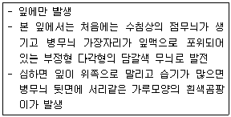

식물보호기사 (2011-06-12 기출문제)
1과목: 식물병리학
1. 수매전염을 하는 병은?
- 벼 흰잎마름병
- 보리 겉깜부기병
- 담배 모자이크병
- 밀 줄기녹병
(정답률: 75%)

2. 벼 잎집무늬마름병의 특징적인 표징은?
- 균핵
- 자좌
- 포자층
- 포자퇴
(정답률: 63%)
3. 파이토플라즈마 진단 방법이 아닌것은?
- 전자현미경적관찰로 사부내의 세포 관찰
- 이병 절편을 Dienes' stain하여 광학 현미경으로 관찰
- 이병 조직의 사부를 DAPI로 염색하여 형광 현미경으로 관찰
- 명아주 지표식물을 이용한 생물검정관찰
(정답률: 66%)
4. 항원-항체 반응을 이용한 검정법은?
- PAGE
- ELISA
- PCR
- Chromatography
(정답률: 77%)
5. 담배모자이크바이러스의 전염경로가 아닌것은?
- 오염토양
- 담배나방
- 담배피우던손
- 오염된농구
(정답률: 63%)
6. 비기생성 병해는?
- 고추 풋마름병
- 대추나무빗자루병
- 배추 모자이크병
- 토마토배꼽썩음병
(정답률: 55%)
7. 배나무 검은별무늬병에 대한 설명으로 틀린 것은?
- 사과나무 검은별무늬병을 일으키는 병균과 학명이 다르다.
- 병원균 월동 부의는 주로 낙엽 또는 인편이다.
- 담자균이다.
- 개화직전과 낙화직후의 약제살포가 방제에 효과적이다.
(정답률: 56%)
8. 병원이 각피를 통해 직접 침입하지 않은 것은?
- 벼 도열병
- 보리 흰가루병
- 밤나무 줄기마름병
- 밀 줄기녹병
(정답률: 54%)
9. 자낭각을 가지는 벼 키다리병균이 속하는 분류강은?
- 소방형자낭균강
- 자낭각균강
- 반균강
- 반자낭균강
(정답률: 87%)
10. 대추나무 빗자루병이나 오동나무 빗자루병을 치료하기 위해 수간주입에 사용하는 약제는?
- 스트렙토마이신
- 옥시테트라사이클린
- 반코마이신
- 클로람페니콜
(정답률: 86%)
11. 다음 설명하는 병징의 병은?

- 십자화과 작물의 모잘록병
- 오이 노균병
- 토마토 역병
- 배추 무사귀병
(정답률: 79%)
12. 과수나 채소에 발생하는 흰가루병의 특징에 대한 설명으로 틀린 것은?
- 밀가루 모양의 흰색포자를 잎의 표면에 형성한다.
- 순활물 기생균으로 인공배양이 어렵다.
- 병 발생 후기에는 자낭각을 형성한다.
- 잎이나 줄기를 시들게 만든다.
(정답률: 45%)
13. 표징을 볼 수 없는 병은?
- 벼 흰잎마름병
- 보리 겉깜부기병
- 대나무 그을음병
- 오이 모자이크병
(정답률: 71%)
14. 묘포장의 묘목을 가해하는 뿌리썩이선충을 방제하는 살선충제로 널리 사용되는 약제는?
- 보르도액
- PCNB
- 다조멧
- 캡탄
(정답률: 59%)
15. 고추 탄저병의 발생은 환경과 밀접한 관계를 가지고 있다. 고추 탄저병의 발생을 조장하는 환경은?
- 저온다습
- 고온다습
- 저온건조
- 고온건조
(정답률: 74%)
16. 식물바이러스를 매개하는 가장 주요한 수단은?
- 바람
- 물
- 햇빛
- 곤충
(정답률: 82%)
17. 균류에 의한 병은?
- 대추나무 빗자루병
- 오동나무 빗자루병
- 붉나무 빗자루병
- 벚나무 빗자루병
(정답률: 77%)
18. 외국으로부터 병해충의 침입을 막기 위해 국제공항.국제항구.국제우체국등에 식물검역관을 주재시켜 국내반입 농산물에 대해 검역을 하는 방제법은?
- 법적방제
- 생물방제
- 현지검사
- 물리방제
(정답률: 88%)
19. 철분 결핍에 의해 수목에 나타나는 전형적인 이상증상은?
- 황화
- 반점
- 썩음
- 마름
(정답률: 77%)
20. 벼 흰잎마름병균의 특성만을 바르게 나열한 것은?
- 간균-단극모-그램양성-노란색
- 간균-단극모-그램음성-노란색
- 간균-양극모-그램양성-노란색
- 구균-양극모-그램음성-흰색
(정답률: 70%)
2과목: 농림해충학
21. 적산온도법칙에 대한 설명으로 틀린 것은?
- 발육영점온도 이상의 온량만 관련된다.
- 유효적산온도는 종에 따라 다르다.
- 유효적산온도는 세대에 따라 다를 수 있다.
- 발육영점온도는 최고생존허용온도보다 높다.
(정답률: 71%)
22. 솔수염하늘소의 성충이 최대로 출현하는 최성기로 가장 적합한 것은?
- 3~4월
- 4~5월
- 6~7월
- 9~10월
(정답률: 65%)
23. 곤충의 표피층에 대한 설명으로 틀린 것은?
- 진피세포는 표피를 이루는 단백질,지질,키틴화합물 등을 합성분비한다.
- 외원표피는 탈피과정에서 모두 소화,흡수되어 재활용된다.
- 기저막은 일정한 모양이 없는 비세포성 연결조직이다.
- 외표피는 수분의 증산을 억제해주는 기능을 한다.
(정답률: 65%)
24. 농림해충의 상대밀도 조사법으로 가장 적절한 방법은?
- 트랩 설치조사
- 빈도조사
- 피도조사
- 설문조사
(정답률: 70%)
25. 벼멸구의 생활사에 대한 일반적인 설명으로 틀린 것은?
- 장시형만이 비래 이동한다.
- 단시형은 모두 암컷이다.
- 우리나라에서는 월동을 하지 못한다.
- 제2세대 성충은 한곳에서 집중 산란,가해한다.
(정답률: 46%)
26. 곤충은 환경에 적응하고 살아가는데 편리하도록 구조적으로 다리가 잘 변형되어 있다. 다음 중 변형된 다리를 갖는 곤충에 해당되지 않는 것은?
- 땅강아지
- 꿀벌
- 모기
- 사마귀
(정답률: 71%)
27. 곤충의 암수 생식기관 구조 중 상응되는 기관이 아닌 것은?
- 알집소관-고환소포
- 수정낭-저장낭
- 옆수란관-수정관
- 중앙수란관-사정관
(정답률: 62%)
28. 배설기관인 말피기소관이 붙어있는 곳은?
- 전장
- 중장
- 후장
- 중장과 후장이 접하는 곳
(정답률: 57%)
29. 다음 곤충조직 중 발생 계통적으로 기원이 다른 것은?
- 중장
- 지방체
- 생식소
- 근육
(정답률: 52%)
30. 해충의 천적이 아닌 것은?
- 점박이응애
- 온실가루이좀벌
- 칠레이리응애
- 베달리아무당벌레
(정답률: 59%)
31. 콩나방은 콩꼬투리의 털이 적고 매끄러운 품종에 산란을 적게 한다. 이것은 내충성의 어느 성질 때문인가?
- 비선호성
- 항충성
- 내성
- 회피성
(정답률: 69%)
32. 천적을 이용한 생물적 방제에 대한 설명으로 옳은 것은?
- 경제적 피해밀도가 낮은 해충에서 성공률이 높다.
- 고립된 환경조건에서 성공률이 높다.
- 이동성이 큰 해충에서 성공률이 높다.
- 외국에서 침입한 해충에서는 성공이 어렵다.
(정답률: 70%)
33. 일반적인 곤충의 표피구조 중 가장 바깥쪽에 위치하는 것은?
- 큐티클
- 진피세포
- 피부샘
- 기저막
(정답률: 77%)
34. 유충과 성충이 모두 기주식물의 잎을 식해하는 곤충은?
- 독나방
- 솔잎흑파리
- 미류재주나방
- 오리나무잎벌레
(정답률: 71%)
35. 같은 살충제를 사용한다 하여도 사용방법에 따라 선택성을 얻을 수 있다. 다음 중 선택성을 높이는데 가장 유리한 것은?
- 독먹이이용
- 분무기이용
- 입제이용
- 분제이용
(정답률: 58%)
36. 완전변태를 하는 것은?
- 파리목
- 메뚜기목
- 노린재목
- 총채벌레목
(정답률: 68%)
37. 해충과 피해양상의 연결이 틀린 것은?
- 말매미-산란에 의한 피해
- 오배자면충-혹을 만듬
- 파밤나방-병의 전파
- 거세미나방-줄기를 자름
(정답률: 49%)
38. 생식형태와 해당 해충의 연결이 틀린 것은?
- 다배생식-솔잎혹파리
- 단위생식-벼물바구미
- 양성생식-배추흰나비
- 단위생식-목화진딧물(여름형)
(정답률: 49%)
39. 해충을 작물에서 수면위나 사각접시, 면포등에 떨어뜨려 해충수를 조사하는 방법은?
- 털어잡기법
- 먹이유살법
- 수반조사법
- 포충망 조사법
(정답률: 61%)
40. 총채벌레의 형태적인 특징으로 틀린 것은?
- 입틀의 좌우모양을 대칭이다.
- 구기는 찔러서 빨아먹는 흡수형이다.
- 몸은 등쪽이 납작하거나 원통모양이다.
- 몸이 작고 날씬한 곤충이며 크기는 0.6~12mm정도이다.
(정답률: 75%)
3과목: 재배학원론
41. 같은 품종의 쌀이라도 평야지보다 산간지에서 생산된것이 밥맛이 좋다고 한다. 가장 주된 이유로 볼 수 있는 것은?
- 밤낮의 기온차이가 크기 때문
- 날씨가 좋기 때문
- 논토양이 척박하기 때문
- 관개수온이 차기 때문
(정답률: 77%)
42. 작물의 수해를 크게 하는 조건은?
- 저수온 청수 유수
- 저수온 탁수 유수
- 고수온 청수 유수
- 고수온 탁수 정체수
(정답률: 76%)
43. 맥류의 동상해 대책에 속하지 않은 것은?
- 배수
- 늦심기
- 가리비료증시
- 밟기
(정답률: 65%)
44. 작물의 기원지를 알아내는 방법으로 거리가 먼 것은?
- 식물지리학적방법
- 계통분리법
- 유전자분석법
- 고고학적방법
(정답률: 56%)
45. 논토양의 일반적특성으로 볼 수 없는것은?
- 담수상태의 논토양에서는 토층분화가 일어나고 미생물에 의해 탈질현상이 생긴다.
- 논토양이 담수로 인해 환원상태가 되면 인산의 무효화가 발생한다.
- 논토양이 담수되면 조류의 대기질소 고정작용이 나타난다.
- 토양이 건조하였다가 가수하면 건토효과등에 의해 유기태질소의 무기화가 촉진된다.
(정답률: 37%)
46. 한발에 처한 작물 체내에서 함량이 증가하는 대표적인 물질로만 나열된 것은?
- 엽록소,단백질
- 전분,엽록소
- 당,프롤린
- 핵산,엽록소
(정답률: 50%)
47. 동일한 포장에 같은 종류의 작물을 계속해서 재배하면 기지현상이 나타나는데, 그 원인으로 볼 수 없는 것은?
- 특정비료성분의 일방적 수탈
- 토양 중의 염류 용탈
- 유독물질의 축적
- 토양선충의 번성
(정답률: 43%)
48. 논에 황산암모늄 비료를 표층시비 할 때 산화층에서 일어나는 작용은?
- 암모니화 작용
- 질산화 작용
- 탈질 작용
- 용탈 작용
(정답률: 45%)
49. 온도가 작물의 생리작용에 미치는 영향에 대한 설명으로 틀린 것은?
- 광합성의 속도는 온도상승에 따라 지속적으로 증가한다.
- 호흡작용은 적온 이상까지 증가하다가 32~35℃에 이르면 오히려 감소한다.
- 양분의 흡수와 이동은 적온까지는 온도상승과 함께 증가한다.
- 증산은 작물이 정상적으로 생육하는 동안에는 온도상승과 함께 증대된다.
(정답률: 61%)
50. 볍씨의 휴면을 유기하는 발아억제 물질은 어디에 있는가?
- 왕겨
- 배젖
- 배
- 유엽
(정답률: 48%)
51. 과수에 있어서 기지가 주로 문제가 되는 것은?
- 감귤류
- 포도나무
- 자두나무
- 살구나무
(정답률: 43%)
52. 다음 중 내습성이 가장 강한 과수류는?
- 무화과
- 복숭아
- 밀감
- 포도
(정답률: 67%)
53. 다년생 잡초는?
- 알방동사니
- 참방동사니
- 너도방동사니
- 바람하늘지기
(정답률: 73%)
54. 이식재배의 장점이 아닌 것은?
- 고추이식재배의 생육기간을 연장하여 수량을 많게 한다.
- 벼 이앙재배는 논의 토지이용 효율을 높인다.
- 양배추 이식재배는 도장을 억제하고 결구를 촉진한다.
- 당근 이식재배는 뿌리의 발육과 비대를 촉진한다.
(정답률: 56%)
55. 종자의 수명이 짧아 단명종자에 해당하는 것은?
- 고추
- 호박
- 토마토
- 수박
(정답률: 68%)
56. 다음 중 요수량이 가장 작은 작물은?
- 벼
- 밀
- 옥수수
- 콩
(정답률: 65%)
57. 벼에서 염해가 우려되는 한계농도는?
- 0.1%NaCl
- 0.3%NaCl
- 0.5%NaCl
- 0.7%NaCl
(정답률: 61%)
58. 작물의 내동성을 증가시키는 생리적 요인으로 옳은 것은?
- 원형질에 친수성 물질이 적다.
- 세포에 전분함량이 많다.
- 원형질의 점도가 높다.
- 원형질단백질에 -SS기보다 -SH기가 많다.
(정답률: 50%)
59. 우리나라 농업의 특징으로 거리가 먼것은?
- 지력이 낮다.
- 윤작이 발달하지 못하였다.
- 경지이용률이 해마다 높아지고 있다.
- 전업농가의 비율이 겸업농가보다 높다.
(정답률: 64%)
60. 대기조성물질과 작물생육에 대한 설명으로 틀린 것은?
- 대기에는 질소가 약79%로 함량이 가장 많다.
- 산소의 농도가 5~10%이하이면 작물 호흡에 지장을 준다.
- 이산화탄소 농도가 높아지면 호흡이 감소한다.
- 작물의 이산화탄소 보상점은 약 0.21~0.3%이다.
(정답률: 43%)
4과목: 농약학
61. 10%엠아이피씨분제 1.0Kg을 2.0%분제로 만들려고 할 때 필요한 증량제의 양은 몇 Kg인가?
- 0.4
- 0.8
- 4
- 8
(정답률: 70%)
62. 메프유제 50%를 0.⑤%로 희석하여 10a당 100L를 살포하려고 할 때 소요약량은 몇 mL인가?(비중-1.008)
- 99.2
- 109.2
- 119.2
- 129.2
(정답률: 56%)
63. 농약 혼용 시 준수하여야 할 사항이 아닌 것은?
- 표준희석배수를 준수한다.
- 혼용한 살포액은 되도록 즉시 살포한다.
- 가능하면 여러 종류의 농약을 혼용한다.
- 혼용이 침전물 생성이 있는 경우 사용하지 않는다.
(정답률: 81%)
64. 테트라디폰(테디온),디코폴,사이로마진은 어떤 농약에 속하는가?
- 살균제
- 살충제
- 살비제
- 제초제
(정답률: 40%)
65. 어떤 물질이 농약으로 사용되기 위하여 구비하여야 할 조건으로 가장 거리가 먼 것은?
- 살포시 작물에 대한 약해가 없어야한다.
- 병해충을 방제하는 약효가 뛰어나야한다.
- 작물재배 전체기간 중 잔효성이 유지되어야 한다.
- 사용하는 농민에 대하여 독성이 낮아야 한다.
(정답률: 78%)
66. 농약의 급성독성에 대한 설명으로 틀린 것은?
- 농약을 단 1회 투여하여 생물집단에 대한 독성을 평가하는 것이다.
- 독성정도는 생물집단의 반수가 치사되는 양으로 평가한다.
- 농약이 살포된 농산물을 섭취하는 소비자에 대한 독성 평가를 위한 것이다.
- 농약관리법에서 급성독성 정도의 구분은 Ⅰ~Ⅳ급까지이다.
(정답률: 58%)
67. 다음 중 농약의 일일섭취허용량에 대한 설명으로 가장 옳은 것은?
- 농약을 함유한 음식을 하루 섭취하여도 장해가 없는 양을 말한다.
- 농약을 함유한 음식을 1년간 섭취하여도 장해를 받지 않는 1일당 최대의 양을 말한다.
- 농약을 함유한 음식을 10년간 섭취하여도 장해를 받지 않는 1일당 최대의 양을 말한다.
- 농약을 함유한 음식을 일생 동안 섭취하여도 장해를 받지 않는 1일당 최대의 양을 말한다.
(정답률: 75%)
68. 염소산염계 제초제 농약에 중독되었을 때 해독제로 가장 적당한 것은?
- 황산소다
- 발(BAL)
- 황산아트로핀
- 팜(PAM)
(정답률: 39%)
69. 다음 중 희석하여 살포하는 제형이 아닌 것은?
- 유제
- 분제
- 수용제
- 수화제
(정답률: 68%)
70. 다음 중 농약에 원인이 있는 약해의 종류가 아닌 것은?
- tetradifon에 2,4,5-T가 혼합되어 귤 잎말림이 생겼다.
- IPSP입자(PSP 204)에 TCBA가 섞여서 감자가 상했다.
- 3년 전에 구입한 parathion 을 사용하여 벼에 약해가 생겼다.
- 제초제 propanil을 뿌리고 곧 카바메이트계 약제를 살포하니 벼에 약해가 생겼다.
(정답률: 42%)
71. 용제에 녹기 어려운 농약 주성분을 물에 분산시킨 현탁제제는?
- 수화제
- 수용제
- 유제
- 플로우어블
(정답률: 42%)
72. 농약의 살포액 조제에 대한 일반적인 설명으로 틀린 것은?
- 전착제는 가용할 때 전착제를 물에 잘 녹인 다음에 살포액에 가한다.
- 수화제는 수화제 분말과 소량의 물을 작은 그릇에 넣고 저은 다음 다시 소요량의 물을 부어 사용한다.
- 유제의 원액에 침전물이 있을 때에는 따뜻한 물을 가하여 침전물이 없어진 다음에 사용한다.
- 조제 시 원액이 잘 용해되기 위하여 사용하는 물은 온도가 높을수록 좋다.
(정답률: 70%)
73. 다음 중 TLm(48시간)은 어떤 동물에 대한 독성 농도를 의미하는가?
- 조류
- 파충류
- 수생동물
- 포유동물
(정답률: 70%)
74. 잡초가 화학물질을 포함한 외부영향으로 저항성이 나타날 수 있는데 이러한 저항성 출현을 지연시키거나 예방하기 위한 적절한 방법이 아닌 것은?
- 다른작용기작을 가지는 제초제를 번갈아 사용한다.
- 단일 약제를 계속 사용한다.
- 직접적 살초성분이 아닌 전구적 제초제를 개발 사용한다.
- 서로 다른 작용기작을 가지는 혼합 제초제를 사용한다.
(정답률: 73%)
75. 석회유황합제의 주된 유효 성분은?
- CaS
- CaS2O3
- CaSO4
- CaS5
(정답률: 54%)
76. 다음 농약 중 유기유황계로서 디티오카바메이트 기의 화학구조로 되어 있지 않은 농약은?
- 지네브
- 디치아논
- 마네브
- 지람
(정답률: 49%)
77. 분제 농약 조제 시 가장 충분하게 고려하여야 하는 농약의 물리성은?
- 현수성
- 유화성
- 가용성
- 비산성
(정답률: 66%)
78. 다음 중 접촉형 제초제는 어느것인가?
- 시마진
- 2,4-디
- 아트라진
- 옥사디아존
(정답률: 33%)
79. 파라치온의 구조식은? (정확한 보기내용을 아시는분께서는 오류 신고를 통하여 보기 내용 작성 부탁드립니다. 문제오류로 정답은 3번입니다.)
- 복원중
- 복원중
- 복원중
- 복원중
(정답률: 69%)
80. 다음 식물생장조절 농약 중 고농도에서는 제초효과를 나타내고, 낮은 농도에서는 생장촉진,도복방지효과가 있다고 알려진 농약은?
- 아이에이에이(IAA)
- 인돌비
- 토마토톤
- 이사디(2,4-D)
(정답률: 60%)
5과목: 잡초방제학
81. 잡초의 학명으로 옳은 것은?
- 너도방동사니-Cyperus serotinus
- 올미-Scirpus juncoides
- 올챙이고랭이-Sagittaria pygmaea
- 벗풀-Eleocharis kuroguwai
(정답률: 57%)
82. 작물 수량이 기준해 볼 때 언제 잡초를 방제하는 것이 가장 합리적인가?
- 잡초와 작물간의 경합 한계기간 이후에
- 작물의 초관이 완전히 형성된 이후부터 수확기 사이에
- 작물의 생식생장 직전에
- 잡초와 작물과의 경합이 일어나기 이전에
(정답률: 62%)
83. 벼에 대한 광 경합이 가장 큰 식물 종은?
- 바랭이
- 물피
- 올미
- 쇠털골
(정답률: 70%)
84. 밭의 겨울작물 재배지에서 우점 발생하는 잡초종으로만 나열된 것은?
- 둑새풀,속속이풀,벼룩나물,별꽃,냉이
- 바랭이,쇠비름,참방동사니,깨풀,돌피
- 마디꽃,바랭이,명아주,벼룩나물,냉이
- 바랭이,쇠비름,참방동사니,깨풀,명아주
(정답률: 68%)
85. 잡초의 생장형에 따른 분류로 틀린 것은?
- 직립형-가막사리,사마귀풀
- 만경형-메꽃,환삼덩굴
- 총생형-둑새풀,억새
- 로제트형-민들레,질경이
(정답률: 54%)
86. 생물적 잡초방제법에 이용되는 않는 생물은?
- 개구리
- 우렁이
- 오리
- 좀벌레
(정답률: 58%)
87. 작물의 경합 특성에 대한 설명으로 옳은 것은?
- 직파하는 작물보다 이식되는 작물이 잡초 피해를 적게 받는다.
- 연작보다 윤작에서 잡초발생이 많다.
- 적파보다 만파가 잡초방제면에서 유리하다.
- 밭벼가 논벼보다 잡초방제면에서 유리하다.
(정답률: 63%)
88. 다음 중 토양 잔류기간이 가장 긴 제초제는?
- 2,4-D
- Paraquat
- Glyphosate
- Bromacil
(정답률: 32%)
89. 제초제 계통의 일반적인 주요 작용기작이 잘못 연결된 것은?
- triazine계-광합성 저해제
- sulfonylurea계-지질 생합성 억제
- dinitroaniline계-세포분열 억제
- diphenyl ether계-세포막 파괴
(정답률: 49%)
90. glyphosate가 일으키는 가장 일반적인 식물형태적(외관적)반응은?
- 백화현상
- 황화,고사
- 상편생장
- 기형
(정답률: 74%)
91. 제초제 중 베타-oxidation후 살초성을 발휘하는 것은?
- Pretilachlor
- Pyrazolate
- Glyphosate
- 2,4-DB
(정답률: 52%)
92. 사람이나 동물에 부착되기 쉬운 낚시모양의 돌기 또는 바늘모양의 가시가 있는 잡초는?
- 피
- 올챙이고랭이
- 도깨비바늘
- 소리쟁이
(정답률: 81%)
93. 2년생 잡초에 대한 설명으로 틀린 것은?
- 대부분 반지중식물이다.
- 로제트형태로 월동한다.
- 주로 온대지역에서 볼 수 있는 잡초이다.
- 월동이후 화아분화하여 개화,결실한 후 고사한다.
(정답률: 43%)
94. 영양번식기관으로 번식하는 잡초는?
- 올방개
- 물달개비
- 알방동사니
- 바랭이
(정답률: 57%)
95. 농경지 잡초 군락변화의 주요 요인이 아닌 것은?
- 정지,경운법변화
- 병해충발생
- 재배방법 변화
- 제초제사용
(정답률: 61%)
96. 제초제를 토양처리제, 토양겸 경엽처리제, 경엽처리제로 분류하는 기준은?
- 처리방법
- 작용특성
- 사용목적
- 방제대상
(정답률: 64%)
97. 식생으로 인하여 그늘이 지게되면 식물의 종자 발아가 억제되는데 그 이유를 피토크롬과 관련하여 옳게 설명한 것은?
- Pfr/Pr의 비율과는 관계 없다.
- Pfr/Pr의 비율이 높기 때문이다.
- Pfr/Pr의 비율이 낮기 때문이다.
- Pfr/Pr의 비율이 같기 때문이다.
(정답률: 55%)
98. 물깊이 5cm로 담수한 논 1ha에 10%유효성분을 가진 어떤 제초제를 제품량으로 3Kg/10a 처리시 1ha의 물속에 함유될 제초제의 농도는?
- 0.6ppm
- 0.9ppm
- 6ppm
- 9ppm
(정답률: 43%)
99. 선택성 제초제가 아닌 것은?
- 2,4-D 액제
- 프로파닐유제
- 세톡시딤유제
- 글리포세이트액제
(정답률: 64%)
100. 경합내용으로 가장 거리가 먼 것은?
- 광
- 온도
- 수분
- 영양
(정답률: 73%)